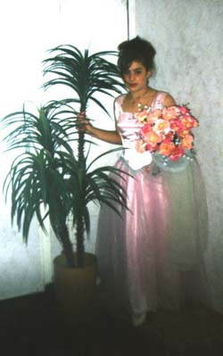

N,antrov;3ovn yv Harsanik
N,antrov;3ovn
D.a3in amovsnaxnylov hamar /no.nyru hy.inagov;3ovn wa3ylo. parygamnyrix mygi hyd a3xylovm ein a.]ga /no.nyrin yv ha3dnovm calov nbadagu1 A.]ga /no.nyru5hama2a3nov;3an mdatrov;3ovn ovnynalow hantyr25a-a]in 0ru myr=ovm ein` my] pyrylow zanazan badja-apanov;3ovnnyr1 D.a3i /no.nyru grgin hantibovm ein a.]ga /no.nyrin ov badasqani sbasovm1Abaca parygamnyru mdyrim ov law harapyrov;3an my] linylov tybkovm el ygo.nyri a-]yv sy.an [ein tnovm5[ein h3ovrasirovm` min[yv hama2a3nov;3ovn [linyr a.]gan dalov masin1
|  |
Hama2a3nov;3ovnn sdanalovx hydo` a.]ga /no.nyru sy.an ein paxovm5isg d.a3i /no.nyru` sy.anin tnovm ein 0.i gam cini5 yv mi kani pa=ag qmylow` ,norhaworovm irynx parygamov;3ovnu5 aba ba3manaworwovm n,antrov;3an masin1 Harsanikix hinc6wyx amis gam awyli a-a] gadarwovm er n,antrov;3ovnu1
A3t 0ru 'ysaxov3i /no.nyru5harazadnyru qnamov dovn cnalis` irynx hyd wyrxnovm ein osgy madani5 hacovsd5ar/a;3a gam osg3a codi5abaran]an yv a3l zartaranknyr1 Yrgov go.myri /no.nyru n,antrov;3ovnix hydo5badrasdov;3ovnnyr ein dysnovm harsaniki hamar1
Harsanik
Harsanikix a-a] qnaminyru ba3manaworwovm yn harsaniki 0rwa masin1 Harsanikix mi kani 0r a-a] nora'ysa3i harazadnyrin hrawirovm yn harsan3ax hantysi1 Harsanikix mi 0r a-a] d.a3i danu 8mis mor;yki9 araro.ov;3ovn e gadarwovm1 Nora'ysan nwacaqpow cnovm5kaworin yv amynamodig martganx hrawirovm e dovn1 Sgswovm e qn]ov3k1
D.a3i /no.nyru hantisaworov;3amp mis yv qmi[ yn ov.argovm a.]ga dovn1 Ha]ort 0ru a-awod3an sgswovm e harsan3ax qn]ov3ku1 D.a3i parygamnyrix mi qovmp a-awod3an cnovm yn harsnaxovi hydyvix1 Polor cnaxo. gananx ov a.]ignyrin pa=anovm yn mygagan a'sy halwa gam qn2or1 Qnamov danu kaworginu yridasart a.]ignyri ov harsnyri hyd hacxnovm ov zartarovm yn noraharsin5orix hydo 'ysan tovrs e pyrovm harsin1 Soworov;3ovn ga harsin hacxnylov =amanag5orbyszi kaworgno]ix nwyr sdanan5a.]ga go.mi h3ovryrix mygu8co.anovm e9 harsi iryrix oryve pan` go,ig5,ori oryve tydal yv a3ln1
Kaworginu5harsnakov3ru5'ysan5azabu harsin tovrs yn pyrovm` sbidag ko.u yrysin1Pagovm5orbys a-adov;3an n,an5 harsi clqow ,a. yn dalis [ir ov [ami[5,ogolat1 Nwaci ov.ygxov;3amp harsin ov 'ysa3in pyrovm yn dovn5yv pagovm ,arovnagwovm e yrcn ov baru1 D.a3i ma3ru timaworovm e nranx yv ovsyrin cxovm yn lawa,50rhnovm yv hampovrovm nranx1
T-nix nyrs mdnylovx a-a] t-an ,ymin tnovm yn mygagan a'sy harsi yv 'ysa3i odkyri dag1 Nrank odkow hara/wovm yn5]artovm a'synyru5aba nyrs mdnovm1 A'sy ]artylu n,an e [ari qa'anman1 Hydo poloru nsdovm yn sy.annyri ,ovr] yv sgswovm e my/ ovraqov;3ovn5yrcovm yn5 barovm5 pa=agaja-yr asovm min[yv ov, ci,yr1
Yryvani :iv 170 Tbrox
Anov, Ko[ar3an
Naira >ovl3an
(Wyratar2i4r n,ylow P7 @y-nargi n,anu)